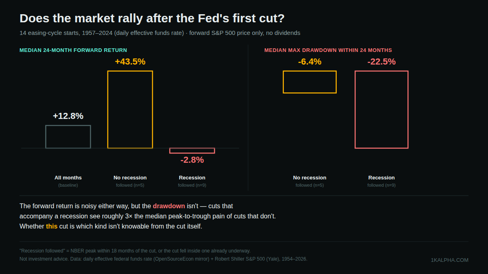
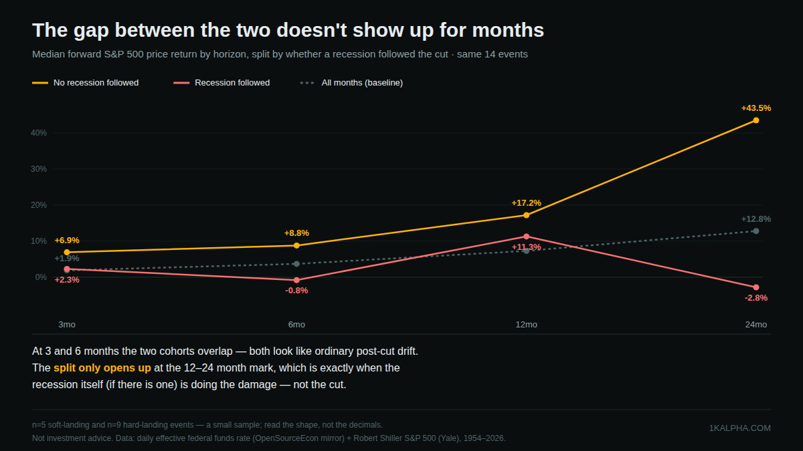

Does the Fed's First Rate Cut Predict a Stock Rally? A 67-Year Test
Every time the Fed starts cutting rates, the same argument replays. One side says the easiest tailwind in investing is "don't fight the Fed" — cuts lower the discount rate on every future cash flow, so stocks should rally. The other side points out that the Fed only cuts when something is breaking, and a first cut has, in living memory, preceded some of the worst drawdowns in market history: 2001, 2007. With the Fed cutting again through 2024 and into 2026, financial commentary is having this argument again — some outlets flatly warn that rate cuts may not be so bullish for stocks, others walk through the historical record and call it a coin flip that depends entirely on context.
That's a specific, checkable claim hiding inside a vague-sounding one. So I built the historical record myself: every identifiable start of a Fed easing cycle since 1957, and what the S&P 500 actually did in the 3, 6, 12 and 24 months that followed.
Short version: the forward return alone is close to a coin flip — first cuts that come with no recession do notably better than average, first cuts that come with one do notably worse, and pooled together the two nearly cancel out. But the drawdown risk is not a coin flip. Cuts that accompany a recession see a median 24-month peak-to-trough decline of −22.5%, roughly three times the −6.4% of cuts that don't — and there is no way to tell, from the cut itself, which kind you're getting.
Methodology
I needed three independent data series and stitched them together month by month:
- Daily effective federal funds rate, 1954–2022 — a public mirror of the Fed's own data (OpenSourceEcon/FedFundsPlot on GitHub), collapsed to a monthly average.
- NBER recession peak/trough dates, the official U.S. business-cycle record, back to 1857.
- S&P 500 monthly price (Robert Shiller's dataset, the same one used in the leverage post), 1871–2026, price only — no dividends, so every return in this post understates total return by roughly the dividend yield of the day, consistently, across every event.
To find "the first cut of an easing cycle" without cherry-picking, I ran a fixed rule over the monthly rate series: a month counts as a first cut if the average rate fell by at least 0.15 percentage points, and no month in the preceding 12 months had fallen by that much. That rule is arbitrary in the way any threshold is, but it's stable — loosening it to a 9-month lookback or a 0.20pp threshold shifts a couple of borderline months in or out (1969, 1990, and 2002 are the sensitive ones) without changing the shape of the result described below. The rule found 13 events from 1957 through 2019. The effective-rate data source stops in mid-2022, before the most recent cycle, so I added a 14th event by hand: the Fed's 50bp cut on September 18, 2024, to a 4.75–5.00% target range — the first cut since March 2020, confirmed against the Fed's own press release.
For each of the 14 events, I measured the S&P 500's forward return at 3, 6, 12 and 24 months, and separately measured the maximum peak-to-trough drawdown in the 24 months following. I then split the 14 events into two groups using NBER's official dates: a cut counts as preceding a recession if an NBER-dated recession peak falls within 18 months after the cut, or if the cut itself landed inside a recession that had already started (true of the two earliest cuts in the sample, 1957 and 1960 — the Fed was slower to react back then). Everything else counts as a no-recession cut.
The headline split: recession status, not the cut itself, drives the outcome
Pooled together, all 14 first cuts show a median forward return of +5.3% at 3 months, +17.1% at 12 months, +18.5% at 24 months — all comfortably ahead of the unconditional baseline (every month in the S&P 500's history, regardless of what the Fed was doing) of roughly +1.9% / +7.3% / +12.8% at those same horizons. Taken at face value, that's "don't fight the Fed" looking pretty good.
But that pooled number is hiding two very different distributions. Split by whether a recession accompanied the cut:

Cuts with no recession attached beat the baseline decisively — a median +43.5% over the following 24 months, more than 3x the unconditional baseline. Cuts that did come with a recession essentially gave back the average bull-market drift entirely: a median −2.8% over the same 24 months. Averaged together across all 14, these mostly cancel out, which is exactly why "cuts are bullish" and "cuts are a warning sign" can both cite real history and both sound right.
The gap doesn't show up right away
The other thing the pooled number hides is timing. At 3 and 6 months out, the two groups look similar — both drift a little better than the unconditional baseline, and you could not have told them apart yet:

The split only opens up at the 12–24 month mark. That's not the rate cut working with a lag — it's simply when the recession itself, if the economy was already heading into one, does the damage to earnings and prices. Over the first two quarters after a first cut, there is genuinely no way to distinguish a "soft landing" cut from a "hard landing" one just by watching the tape.
All 14 events
| First cut | Rate move | Landing | +3mo | +6mo | +12mo | +24mo | Max DD 24mo |
|---|---|---|---|---|---|---|---|
| 1957-11 | 3.50%→3.27% | Hard* | +2.3% | +8.3% | +30.1% | +41.8% | −4.6% |
| 1960-06 | 3.85%→3.32% | Hard* | −4.3% | −0.8% | +14.6% | −2.8% | −22.5% |
| 1966-12 | 5.76%→5.40% | Soft | +9.9% | +12.4% | +17.2% | +30.9% | −7.0% |
| 1968-09 | 6.03%→5.78% | Hard | +5.1% | −2.0% | −6.7% | −18.5% | −29.0% |
| 1973-10 | 10.78%→10.01% | Hard | −12.5% | −15.8% | −36.8% | −19.3% | −38.9% |
| 1979-11 | 13.77%→13.18% | Hard | +11.2% | +3.9% | +30.9% | +18.5% | −12.8% |
| 1984-09 | 11.64%→11.30% | Soft | −1.0% | +8.0% | +10.8% | +43.5% | −4.4% |
| 1989-06 | 9.81%→9.53% | Hard | +7.3% | +7.7% | +11.3% | +16.9% | −14.8% |
| 1995-12 | 5.80%→5.60% | Soft | +5.3% | +8.8% | +20.9% | +56.6% | −4.3% |
| 1998-10 | 5.51%→5.07% | Soft | +20.9% | +29.3% | +25.9% | +34.6% | −6.4% |
| 2001-01 | 6.40%→5.98% | Hard | −10.9% | −9.8% | −14.6% | −32.9% | −36.0% |
| 2007-08 | 5.26%→5.02% | Hard | +0.6% | −6.9% | −11.9% | −30.6% | −50.8% |
| 2019-08 | 2.40%→2.13% | Hard | +7.2% | +13.1% | +17.1% | +53.7% | −19.1% |
| 2024-09 | 5.33%→4.83%† | Soft (so far) | +6.9% | +1.1% | +17.1% | n/a | −11.1% |
*1957-11 and 1960-06 cuts landed inside a recession that had already begun — a reactive cut, not one that preceded a downturn. †2024-09 rate move is the FOMC target-range midpoint (effective-rate series used for the other 13 rows stops mid-2022). 24mo return for 2024-09 is not yet observable in the price series used here.
Does 2019 belong in the "hard landing" bucket?
One event is worth a second look. The three 2019 cuts (July, September, October) were explicitly framed by the Fed as a "mid-cycle adjustment," not recession-fighting, and the recession that followed six months later — the sharpest, steepest drawdown in the table at −19.1% within 24 months — was COVID-19, an exogenous shock with essentially nothing to do with monetary policy. My mechanical rule counts it as a "hard landing" cut because a recession did, in fact, start within 18 months. That's the honest output of the rule, but it's worth flagging as the one case in the sample where the label plausibly overstates the cut's relationship to what followed. Drop it, and the hard-landing group's median drawdown gets slightly worse, not better (2019's −19.1% is actually milder than that group's median −22.5%) — so this particular judgment call doesn't do the "hard landing looks bad" story any favors either way.
Bottom line
- "Don't fight the Fed" and "the first cut is a warning sign" are both half right. Pooled together across 14 cycles since 1957, first cuts modestly beat the market's unconditional average return — but that average is the sum of two very different outcomes that cancel out, not a single reliable effect.
- The forward return is a coin flip; the drawdown risk is not. No-recession cuts: median 24-month drawdown of −6.4%. Recession cuts: −22.5%, roughly 3x worse. That gap is the most robust thing in this dataset.
- You cannot tell which kind you're getting from the cut itself. The split only becomes visible 12+ months after the fact, once a recession (if there is one) has had time to actually happen. In the first two quarters, a soft-landing cut and a hard-landing cut look identical.
- Small sample, read with real caution. n=14, split 5/9. This is directional evidence about what tends to happen, not a law of markets.
So: neither side of the "don't fight the Fed" argument is making up its evidence. They're just each looking at one half of a distribution that the other half offsets. The only question worth asking about any specific cut — including the one happening as this is being written — is the one this backtest can't answer in real time: is a recession already underway underneath it, or not?